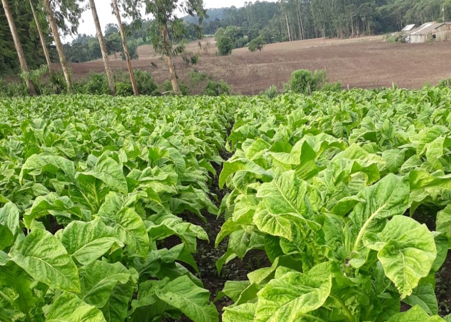
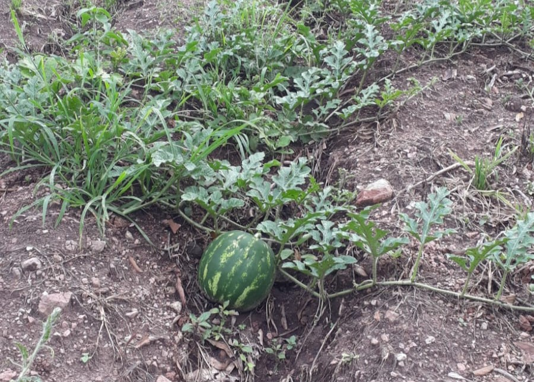
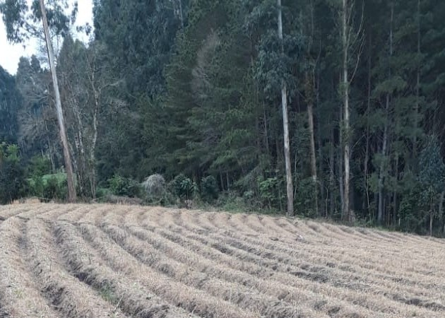

Interdependência campo e cidade
Explore como o campo e a cidade se fortalecem mutuamente para formar uma base sólida de desenvolvimento econômico e social.

Relações e conexões
Descubra exemplos práticos da colaboração entre o meio rural e o urbano, promovendo qualidade de vida e sustentabilidade.

Preservação ambiental
Conheça a importância da conservação ambiental enquanto elo vital entre o campo e a cidade para as gerações futuras.